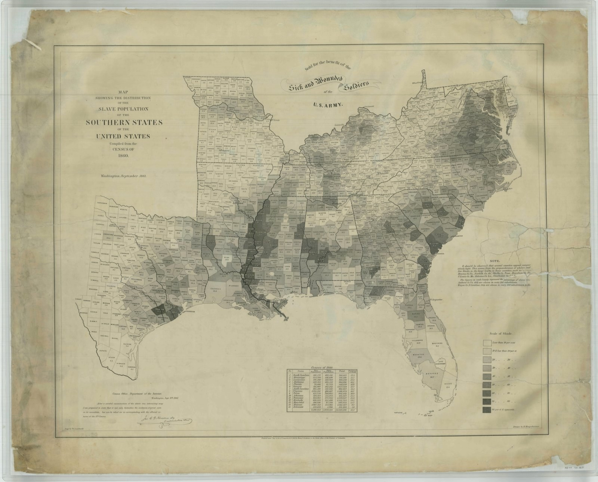

Directions: Work through the five stations in order. Each station holds one record of 1861 or 1862, quoted from the audited bank record named in its Source line, with cuts marked by ellipses, described rather than reproduced where the record itself presents an image in words, or labeled as a teaching summary where the record is presented in that form. As you work, keep the ledger in Part 2: for each record, state what theory of the war it carries, choosing from endurance, strangulation, devotion, cost, and restraint suspended, and the evidence in the record for that theory. At the end, judge which side's theory the evidence of 1861 and 1862 supports, and defend the judgment from the documents.
Source: Abraham Lincoln, 'A Proclamation on the Suspension of Habeas Corpus,' 1862 (Ohio Civil War Central; transcription of General Orders No. 141; punctuation normalized). Quoted from the audited bank record. The record's opening and closing matter is cut, and the cuts are marked by ellipses in the record itself. Spelling and punctuation follow the record, which notes that punctuation is normalized.
"[...] First. That during the existing insurrection, and as a necessary measure for suppressing the same, all rebels and insurgents, their aiders and abettors, within the United States, and all persons discouraging volunteer enlistments, resisting militia drafts, or guilty of any disloyal practice, affording aid and comfort to rebels against the authority of the United States, shall be subject to martial law, and liable to trial and punishment by courts-martial or military commission."
"Second. That the writ of habeas corpus is suspended in respect to all persons arrested, or who are now, or hereafter during the rebellion shall be, imprisoned in any fort, camp, arsenal, military prison, or other place of confinement by any military authority, or by the sentence of any court-martial or military commission."
State who is made subject to martial law in the first order, in the proclamation's own categories, and what the second order suspends and for whom. Then state what this record assumes about how the war will be won at home. Then enter in the ledger what theory of the war this record carries, with its evidence.
Source: Sullivan Ballou, 'Letter to Sarah Ballou,' 1861 (AmericanLiterature.com; authenticity disputed). Quoted from the audited bank record. Ballou, a major in the 2nd Rhode Island Volunteers, wrote this letter a week before First Bull Run, where he was killed. The record carries an honesty note students should keep: no original manuscript in Ballou's hand has ever been found, and historians debate whether the polished text is entirely his. The American Battlefield Trust and the National Park Service present it as Ballou's while acknowledging the debate. Cuts are marked by ellipses.
"Our movement may be one of a few days duration and full of pleasure, and it may be one of severe conflict and death to me. Not my will, but thine O God, be done. If it is necessary that I should fall on the battlefield for my country, I am ready. I have no misgivings about, or lack of confidence in, the cause in which I am engaged, and my courage does not halt or falter. I know how strongly American Civilization now leans upon the triumph of the Government, and how great a debt we owe to those who went before us through the blood and suffering of the Revolution. And I am willing, perfectly willing, to lay down all my joys in this life, to help maintain this Government, and to pay that debt."
"Sarah, my love for you is deathless, it seems to bind me to you with mighty cables that nothing but Omnipotence could break; and yet my love of Country comes over me like a strong wind and bears me irresistibly on with all these chains to the battlefield."
State what Ballou says about the cause he is engaged in and what he is willing to lay down for it, in his own words. Then state the contest he describes inside himself, naming the two loves and the images he gives each. Last, state what this letter assumes an army runs on. Then enter the station in the ledger.
Source: U.S. Coast Survey, 'Map Showing the Distribution of the Slave Population of the Southern States,' 1861 (DocsTeach; image described). The map is reproduced below from the file the bank record carries. The passage under it is the audited bank record's own description of the map, quoted entire.

"A map of the Southern states shaded by county to show the percentage of enslaved people in the population, based on the 1860 census. Darker shading marks counties where enslaved people were the largest share of the population, especially along the Mississippi River and across the Black Belt of Alabama, Mississippi, and Georgia. The map was one of the first American attempts to turn census numbers into a visual picture. President Lincoln reportedly consulted the map during the Civil War."
State what the shading measures, where the darkest shading clusters as the record names the places, and what the map was among the first American attempts to do. Then state what a government reading this map in 1861 could see about the Confederacy's labor and about where slavery was most deeply planted. Then enter the station in the ledger.
Source: Alexander Gardner, 'Dead of Antietam,' September 1862 (Library of Congress; image described). This station follows the unit's image discipline and the bank record's own presentation. Alexander Gardner's photographs of the Confederate dead at Antietam are described in words in this record and are NOT reproduced in this lesson, in the student documents or in the deck. No photograph of the dead appears anywhere in this unit. What students study here is the audited description and the documented effect of the photographs' New York exhibition in October 1862.
The record's description of the photograph, quoted entire: "A photograph of dead Confederate soldiers lying piled together in a sunken ditch at Antietam, Maryland. The bodies are clustered in the ditch bed among broken fence rails and scattered debris. At the left edge of the frame, a blurred living figure stands watching on the bank of the ditch."
From the record's headnote: "Brady displayed the pictures in his New York gallery that October as The Dead of Antietam. For the first time, civilians who had followed the war through engravings confronted photographs of corpses on an American battlefield. The exhibition shocked visitors, showing that photography could make distant suffering feel immediate and changing how Americans would see every war after it."
State what the description says the photograph shows, naming the place in the ditch, what lies among the bodies, and the figure at the frame's left edge. Then state where the photographs were displayed, when, and what the headnote says they changed for the civilians who saw them. Last, state what this record adds to a casualty figure that the figure alone cannot carry. Then enter the station in the ledger.
Source: Teaching summary written for this lesson from the public record of General Winfield Scott's letter to General George B. McClellan of May 1861, labeled as a summary on its face. No sentence in this summary is presented as a period quotation.
In May 1861, General in Chief Winfield Scott, seventy four years old and the army's senior officer, set out a plan for defeating the Confederacy without first invading it in force. Union warships would blockade the southern ports, closing the Confederacy to trade, so that cotton could not go out and arms, manufactures, and credit could not come in. A strong column, Scott proposed some eighty thousand men with gunboats, would then move down the Mississippi River, take its forts, and hold the river, cutting Texas, Arkansas, and Louisiana off from the eastern Confederacy. The remaining southern states, enclosed by the blockade, the river, and the Union armies on their borders, would be pressed until, in Scott's expectation, Union sentiment inside them revived and the rebellion collapsed under the pressure. Newspaper critics mocked the plan as slow, coiling work and named it for the anaconda, the snake that kills by constriction. Lincoln adopted its parts in substance, the blockade proclaimed in April 1861 and the western river campaigns of 1862, while also demanding the forward battles Scott had hoped to postpone.
State the plan's two instruments and the order Scott proposed for them, what each was meant to close or cut, and the end Scott expected the pressure to produce inside the Confederacy. Then state what the newspapers named the plan and why, and which of its parts the record says Lincoln adopted. Then enter the station in the ledger.
| Station | What theory of the war it carries | The evidence in the record |
|---|---|---|
| 1. Habeas corpus | ||
| 2. Ballou | ||
| 3. The map | ||
| 4. Antietam | ||
| 5. Anaconda |
Which side's theory of the war does the evidence of 1861 and 1862 support? Answer in a developed paragraph. Use at least three stations, state each side's theory before you judge it, and answer in one or two sentences the strongest evidence for the other side.
Station 1. The first order makes subject to martial law, and liable to trial by courts martial or military commission, all rebels and insurgents, their aiders and abettors within the United States, and all persons discouraging volunteer enlistments, resisting militia drafts, or guilty of any disloyal practice affording aid and comfort to rebels. The second order suspends the writ of habeas corpus for all persons arrested or imprisoned in any fort, camp, arsenal, military prison, or other place of confinement by military authority or by sentence of a court martial or military commission. The record assumes the war at home runs on compliance, that enlistment and the draft must be protected from discouragement by military law because ordinary law had not restrained it. Theory carried: restraint suspended, in the service of endurance. (Blueprint 12)
Station 2. Ballou writes that he has no misgivings about, or lack of confidence in, the cause in which he is engaged, that American Civilization leans upon the triumph of the Government, and that he is willing, perfectly willing, to lay down all his joys in this life to help maintain this Government and pay the debt owed to the generation of the Revolution. The contest inside him is between his unbounded love for his wife and children, which binds him with mighty cables nothing but Omnipotence could break, and his love of Country, which comes over him like a strong wind and bears him, chains and all, to the battlefield. The letter assumes an army runs on devotion of this kind, on men who have settled the account at home before they march. Theory carried: devotion. The authenticity caveat in the Source line is part of the record and should be taught with it. (Blueprint 11)
Station 3. The shading measures the percentage of enslaved people in each southern county's population, from the 1860 census. The darkest shading marks the counties where enslaved people were the largest share, especially along the Mississippi River and across the Black Belt of Alabama, Mississippi, and Georgia. The map was one of the first American attempts to turn census numbers into a visual picture. A government reading it in 1861 could see that the Confederacy's labor force was itself enslaved and owed it no loyalty, and that slavery was most deeply planted along the river Scott's plan proposed to take and across the cotton belt the blockade was meant to strangle. Theory carried: strangulation, drawn as geography. (Blueprint 11)
Station 4. The description shows dead Confederate soldiers lying piled together in a sunken ditch at Antietam, the bodies clustered in the ditch bed among broken fence rails and scattered debris, with a blurred living figure standing watching on the bank at the left edge of the frame. Brady displayed the pictures in his New York gallery that October as The Dead of Antietam. The headnote records that civilians who had followed the war through engravings confronted photographs of corpses on an American battlefield for the first time, and that the exhibition shocked visitors and changed how Americans would see every later war, because photography made distant suffering feel immediate. Beyond the casualty figure of some 22,700 for September 17, 1862, stated as the usual reckoning, the record carries what a number cannot: the war's work made visible to the home front in the war's second autumn. Theory carried: cost. No photograph is reproduced in this lesson, following the discipline stated on the station's face. (Blueprint 12)
Station 5. The summary's record, labeled a summary on its face: Scott proposed in May 1861 a naval blockade of the southern ports first in logic, closing the Confederacy to trade, and then a column of some eighty thousand men with gunboats down the Mississippi to take and hold the river, cutting Texas, Arkansas, and Louisiana off from the east. The end he expected was internal: the enclosed states pressed until Union sentiment inside them revived and the rebellion collapsed under the pressure. Newspapers named it for the anaconda, the snake that kills by constriction, because the plan coiled and squeezed rather than striking. Lincoln adopted its parts in substance, the blockade of April 1861 and the river campaigns of 1862, while also demanding forward battles. Theory carried: strangulation. (Blueprint 11)
The verdict. Full credit requires both theories stated, a judgment, three stations used accurately, and the other side's strongest evidence answered. The Union's theory, strangulation by blockade and river on superior numbers, is the one the stations support in substance: the map (Station 3) shows the labor system and the river geography the plan targeted, the summary (Station 5) shows the plan adopted in its parts, and the habeas record (Station 1) shows the government reorganizing home front law around a long war rather than a short one. The Confederacy's theory, endurance rewarded by recognition, draws its strongest evidence from cost: the Antietam record (Station 4) shows a price in the war's second year that no one in April 1861 had priced in, and Ballou (Station 2) shows the devotion the Union also needed and spent. The strongest verdicts concede that endurance was not yet disproved in 1862, and judge instead that the evidence shows strangulation working and recognition receding, while cost mounted on both sides without yet deciding the will of either.